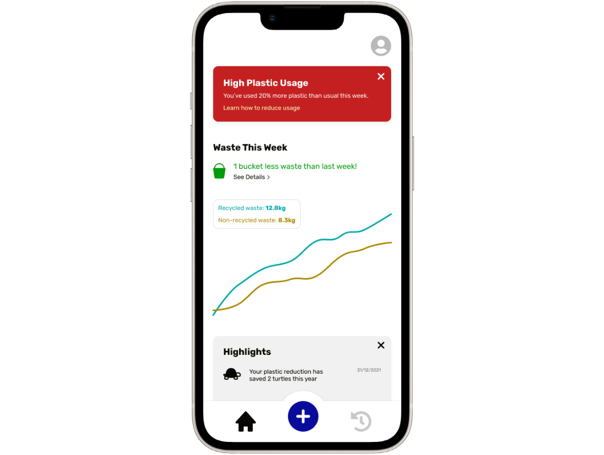
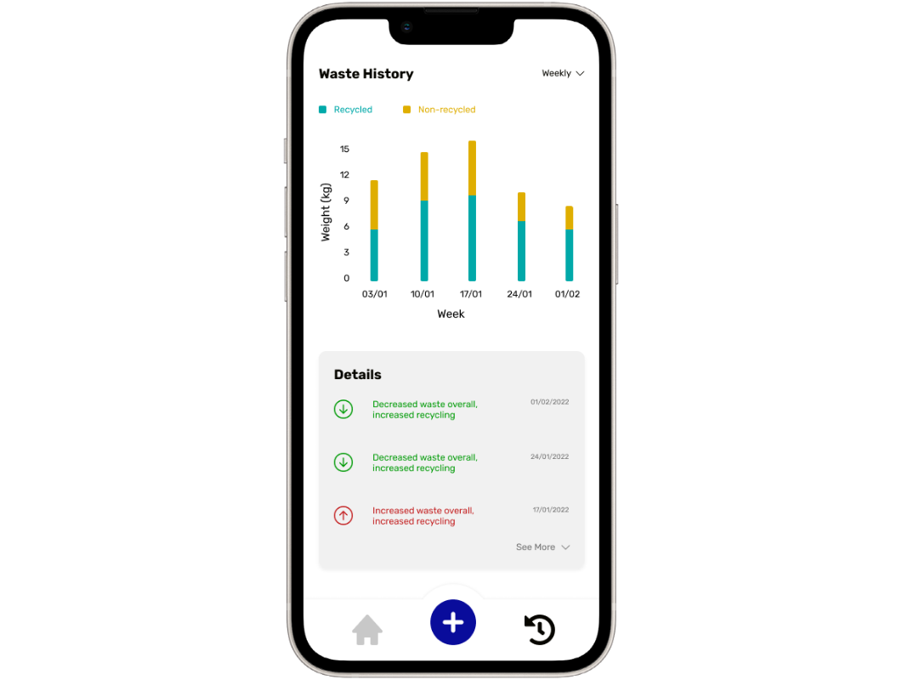

WasteAway
Throw Away Consciously
Product Designer | UI/UX Designer


Data, at your Disposal
WasteAway is a mobile app with one simple purpose: to reduce waste disposal by making its users more conscious of what they throw away. It does this by tracking waste disposal, and offering encouraging and warning messages throughout each week.
Relatable Insights
Progress and warnings are displayed in the dashboard not in absolute values such as weight, but rather in relatable, real-world comparisons that connect with users emotionally.
